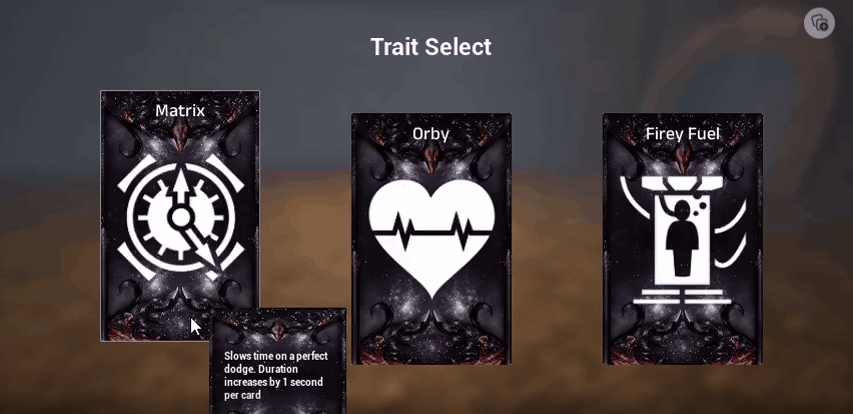

Wrath of the Stormcaller: A Roguelike Action Hack and Slash Game
Documented Vlogs Link to Full Playlist
Link to the game
Wrath of the Stormcaller is a challenging and exciting roguelike action hack and slash game. You play as a powerful hero fighting through waves of enemies in a dungeon filled with danger and mystery. As you battle your way through each level, you'll pick up cards and power-ups that will help you upgrade your character and improve your chances of survival. But beware - the minions of the Stormcaller, an evil deity who has brought chaos and destruction to the land, will stop at nothing to prevent you from reaching their master. To defeat the Stormcaller and bring an end to the storm, you'll need to use all of your skills and cunning, as well as the strategic use of weapons and magic, to overcome a variety of obstacles and challenges.

when we first began planning the game, it was intended to be a small arena-based game where the arena slowly closes on you with card power-ups and a level system. However, as we shared our game design with others and received feedback, the scope and vision for the game grew and evolved over time. One significant change was the decision to hand-build the arenas in order to create a more immersive and engaging experience for players. This change required a significant amount of additional work and effort, but we believe it will ultimately pay off in the form of a more polished and enjoyable game.
Gameplay Loop
Early Game
- In the early game, players won't be very powerful and will have to make do with the resources you have.
- The main goal is to clear each level by defeating waves of enemies.
- Cards drop as you progress through the game, and they give you permanent buffs that can significantly improve your character's abilities.
- As you progress you'll find skill artifacts that give your player a new skill to play with
- If you die, you'll lose some progress, but you'll keep half of the cards you collected during your playthrough.
- Dying is a natural part of the gameplay, and it can occur both in the early and late game stages.
- To collect the cards you've earned after dying, you simply need to go to the statue shown in the game.
Mid Game
- In the mid game, players will be more powerful and have unlocked more abilities, but the levels and enemies will be much harder.
- To continue getting stronger, players must keep collecting cards, as they will become increasingly important to progress.
- The number of enemies will have increased, and they will deal more damage. For example, skeletons will now be equipped with weapons and do more damage, while mages will be able to teleport if players get too close.
- Golems will become more beefy, meaning they will be harder to defeat and deal more damage.
- Overall, the mid game will be a significant step up in difficulty from the early game, but players can continue to improve their abilities by collecting and using cards.
Late Game
- By the time you reach level 11, you will have collected a significant amount of cards to help you progress in the game.
- The ultimate goal is to defeat the final boss, the Stormcaller, at level 14.
- Once you defeat the Stormcaller, the storm will clear and the game will be complete.
- Players will have the option to replay the game with the storm cleared to see how it changes the gameplay experience, or they can exit the game.
Main Features
Cards
Skill Artifacts